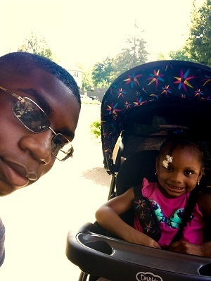

Just my niece and I grabbing ice cream, on vacation.
Personal Background: I was born in Pennsylvania, but my family moved to Charlotte when I was about 6. From the age of 12 I always had a interest in technology, mostly because my father works in the IT field.
Professional background: I've worked for multiple storage and moving companies, however most of my time has been spent doing different kinds of volunteer work.
Academic background: I am going for my Associates Degree in Computer Engineering.
Background in the subject matter of this course: I've had zero experience with the subject matter in this course.
Primary computer platform: My primary computer platform is Windows and this is because I simply used an Old Windows laptop to complete my assignments throughout high school.
Reason for taking each course:
Web-110-01: Internet/Web Fundamentals-I am taking this course because it is a requirement towards an Associate Degree in IT.
CIS-110-02: Introduction to Computers- I am taking this course because I want to get a feel for the type of IT work I plan to
CTI-110-50: Web, Pgm, and Db Foundation- I am taking this course because it is a stepping stone to my main goal of me receiving my degree.
HIS-132-17:American History II: This course is a requirement to getting an Associates Degree in Computer Engineering, which is one of my main goals.
Funny story or interesting item about yourself to remember you by: One interesting item about me is that I am a basketball fanatic. I love the sport completely.
I'd also like to share: I'm a very quiet and low-key type person. I don't really enjoy the spotlight and would much rather just be a regular member of the audience.